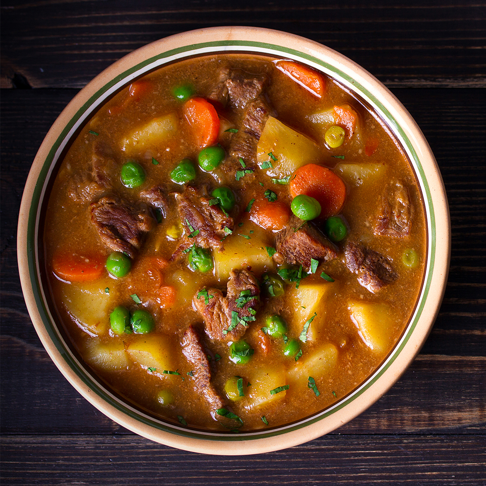
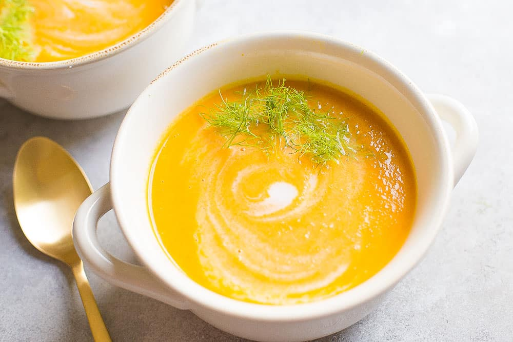
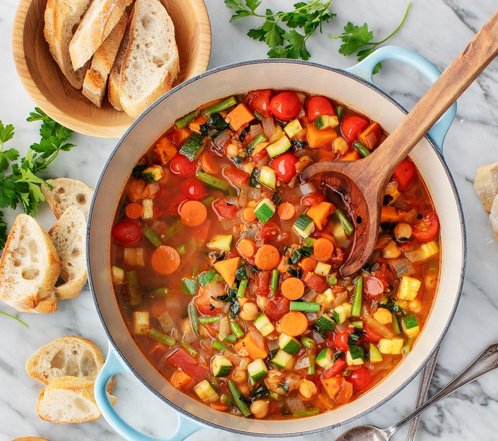
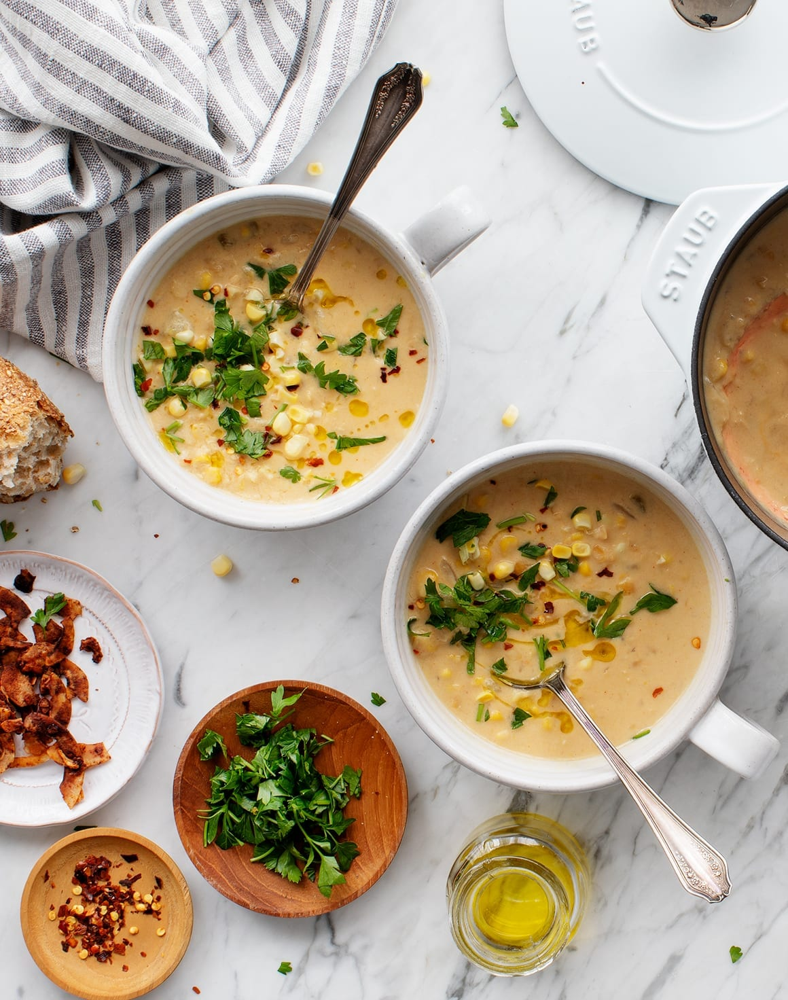
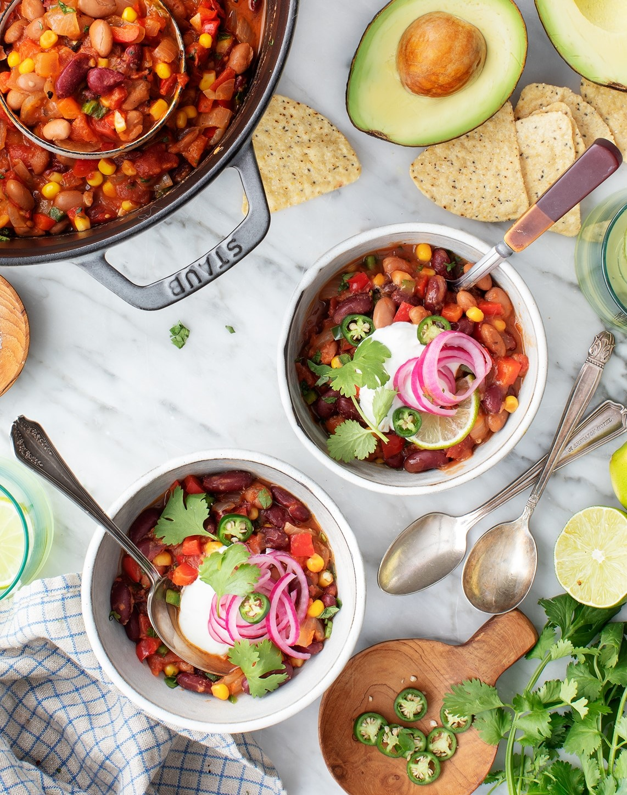
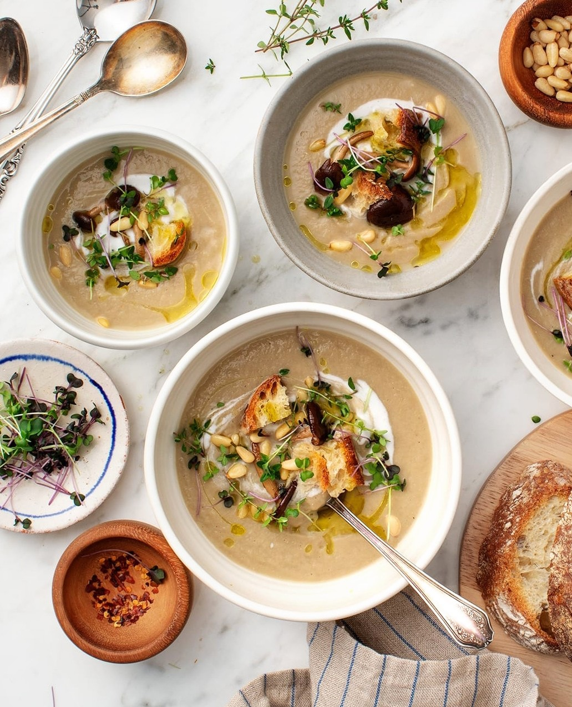
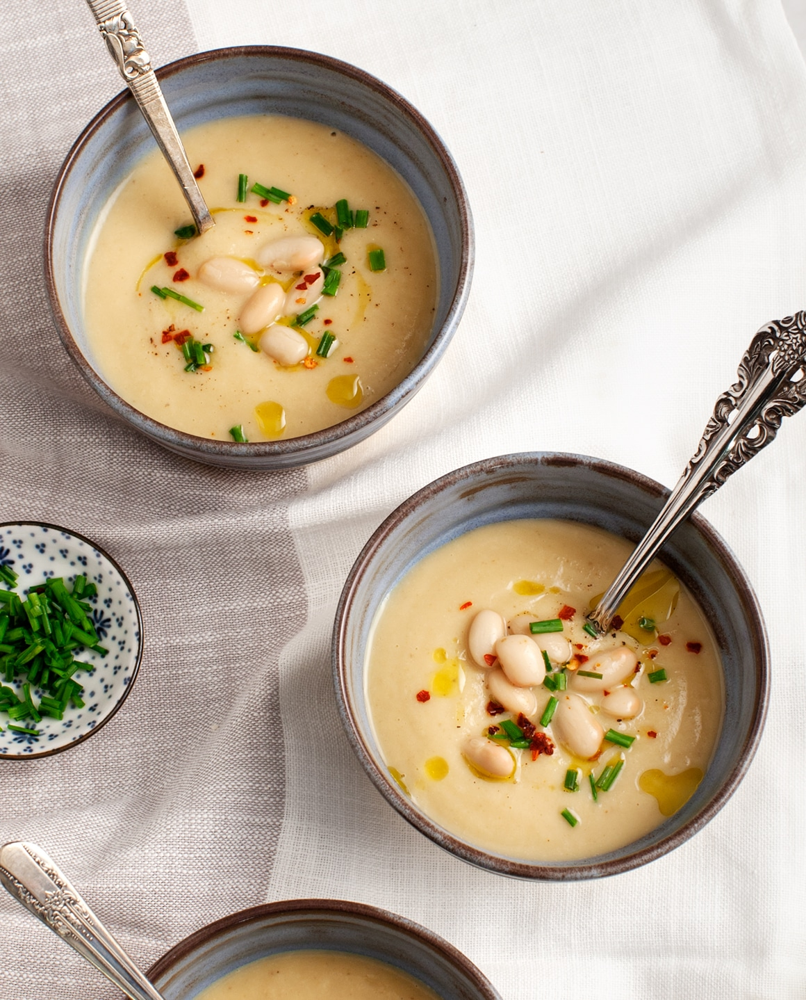
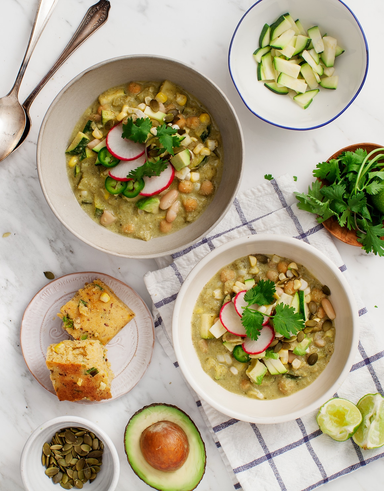
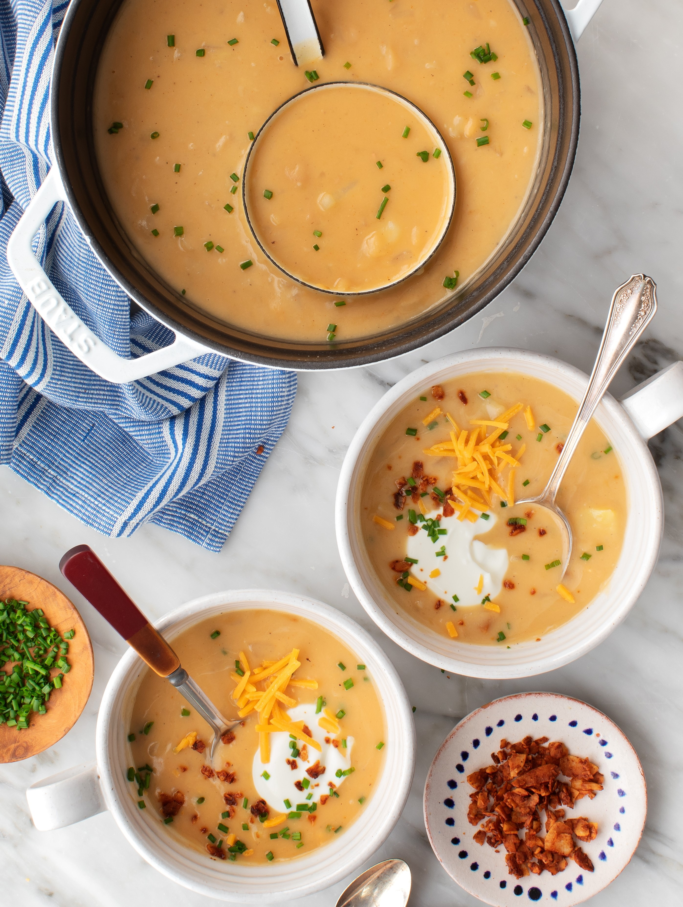
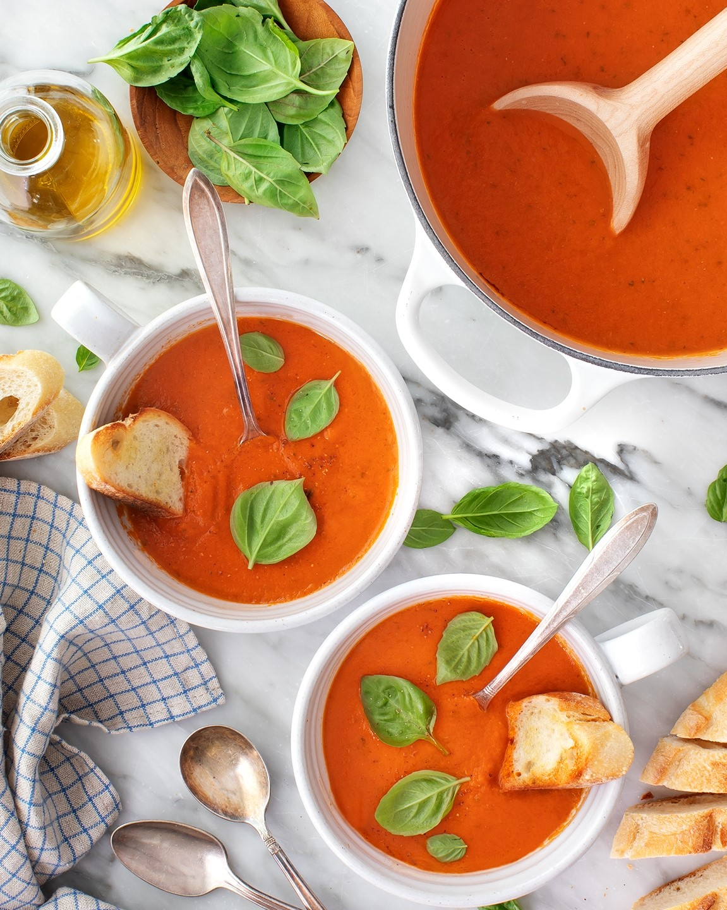

| Meat Soups | Dairy Soups | Vegetable Soups |
|  |  |  |
1. Season to taste. Raw vegetable ingredients need seasoning, and vegetable broths vary in salt level. If your soup is bland, don’t hesitate to add generous pinches of salt and lots of fresh black pepper. Taste as you go!
 2. Drizzle with olive oil. I always finish soups with a generous drizzle of olive oil. It adds richness and makes the flavors sing.
 3. Save some for lunch! Soup often tastes better on the second day, so be sure to make enough to have leftovers. Most soup recipes also freeze well for up to a few months. Check out this post for my best freezing tips!
 4. Spice to your level. Customizing your soup is the fun, creative part of cooking soup recipes. If you’re making a recipe that calls for lots of spice but you prefer milder flavors, start with less. If you like things spicy, add more! Taste as you cook, and adjust the flavors to make something you really love.
| Chop in spoon sizes | Salt your soup sparingly |
|---|---|
| When chopping vegetables, think about how big you want them to be on the spoon. Even hearty, rustic soups should have well chopped, reasonably sized vegetables. Greens such as spinach and kale also need to be chopped, or they will be difficult to eat. | Depending on the ingredients you’re adding, you don’t always know how much salt is going in. Many stocks have high levels of sodium, as do canned beans, vegetables and tomato paste. For this reason, save most of your seasoning until the end. Taste and adjust with salt and pepper as needed. |
| Take stock of your stock | Simmer, simmer, simmer |
|---|---|
| When it comes to making clear, brothy soups, the stock that you use is the most important ingredient. Poorly flavoured stock will ruin the entire pot of soup. For clear soups, homemade broth is always the best choice. If that isn’t an option for you, purchase butcher’s broth instead of grocery store brands. (You can cheat puréed and cream soups with canned broth in a pinch.) | Once soup has come to a boil, reduce to a simmer and make sure that it stays there. Boil things too vigorously, and the vegetables will get mushy, the meat will toughen, and the noodles will start to break down. |
| Know your noodles | Portion the servings |
|---|---|
| When making noodle soups, do not cook the noodles separately. Add noodles as the final addition, and cook until tender, allowing the noodles to take on the flavour of the soup. Noodles that are cooked separately will lack flavour and break down when added. But: If you plan on freezing your soup, don’t add the noodles. Instead add them once it has been thawed and brought back to a boil. The noodles will taste much fresher this way. | If you’re serving a hot soup, make sure it’s just that — piping hot. Also, the ideal serving size for an appetizer portion is about 1 cup (250ml), while a meal portion is about 1 1/3 cups (350ml). |
| For tips on how to blend and puree soup,click here. |
|---|
| ENJOY! |